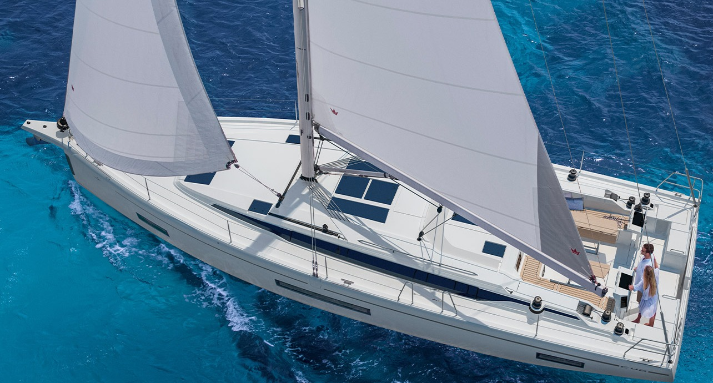
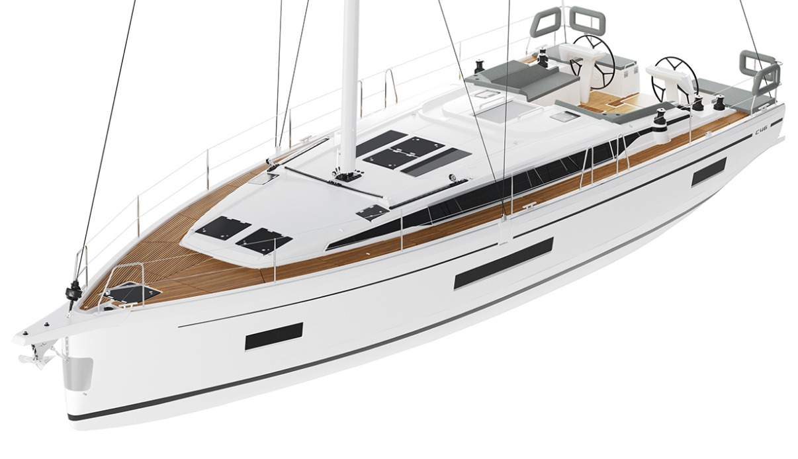
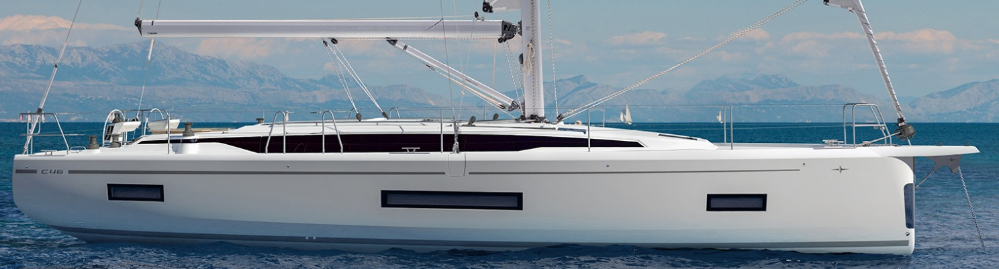
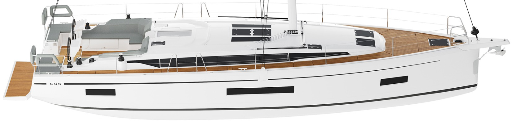
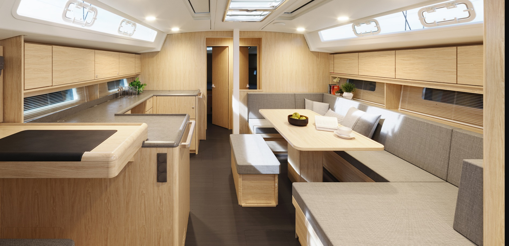
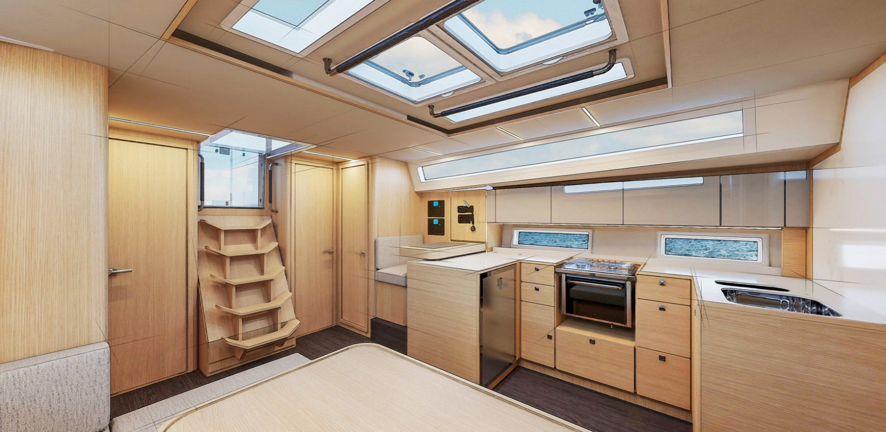
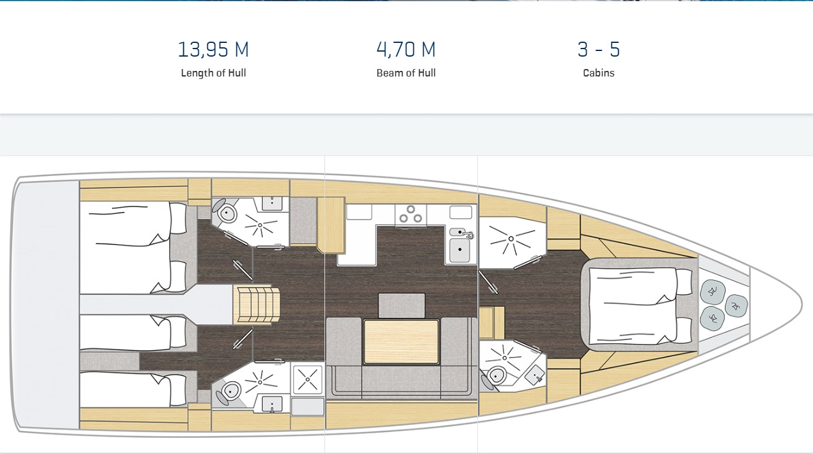

03 / MY YACHT · BAVARIA YACHTS
C46.
부산에서 시작하는 바다 위의 생활.
넉넉한 실내 공간과 유연한 객실 구성으로
함께 떠나는 시간을 더 편안하게.
14.50 m전장 / LOA
4.70 m최대 선폭 / BEAM
3–5객실 구성 / CABINS
Cossutti요트 디자인 / DESIGN
THE ART OF CRUISING
Room to sail.
Space to stay.
Cossutti Yacht Design이 설계한 선체와 넓은 선미. 갑판 위의 이중 조타 위치, 선실로 이어지는 중앙 동선, 햇빛을 받아들이는 살롱이 하나의 생활 공간을 이룹니다.
원하는 객실·욕실 조합에 따라 실내 구성을 선택할 수 있습니다. 첨부한 문서의 이미지를 중심으로 외관과 내부를 살펴보세요.
BAVARIA 공식 모델 소개
EXTERIOR & INTERIOR
갑판에서 선실까지




BELOW DECK / ORIGINAL LAYOUT
바다 위의 생활 동선
문서에 포함된 내부 도면입니다. 번호를 누르면 해당 공간의 역할을 볼 수 있습니다.


오른쪽 = 선수 / 왼쪽 = 선미. 도면은 첨부 문서의 한 가지 구성 예시입니다. 실제 객실·욕실 수와 설비는 선택한 옵션에 따라 달라집니다.
TECHNICAL SPECIFICATIONS
Built for
the open sea.
C46 모델의 공식 기본·선택 사양.
견적 시 연식과 선택 옵션을 확인하세요.
| 전장 / 바우스프릿 포함 | 14.50 m / 14.91 m |
|---|---|
| 선체 길이 | 13.95 m |
| 최대 선폭 | 4.70 m |
| 흘수 · 기본 / 얕은 용골 | 2.30 m / 1.75 m |
| 배수량 · 기본 | 12,730 kg |
| 엔진 · 기본 / 옵션 | 57 mhp / 80 mhp |
| 연료 탱크 | 220 L |
| 청수 탱크 · 기본 / 옵션 | 490 L / 710 L |
| 돛 면적 | 115 m² |
| 객실 / 화장실 구성 | 3–5 / 2–4 |
| CE 분류 | A12 / B14 / C16 |
| 설계 | Cossutti Yacht Design |
YOUR NEXT HORIZON
나의 요트, BAVARIA C46
가격 · 옵션 · 납기 · 국내 인도 조건은 판매점에 문의하세요.
사진·내부 도면: 첨부한 「3. My Yacht.hwp」. 사양: BAVARIA 공식 모델 페이지.